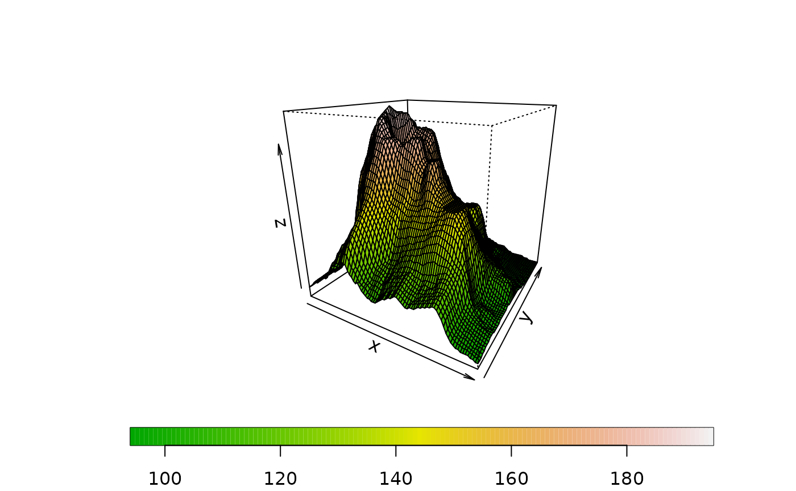
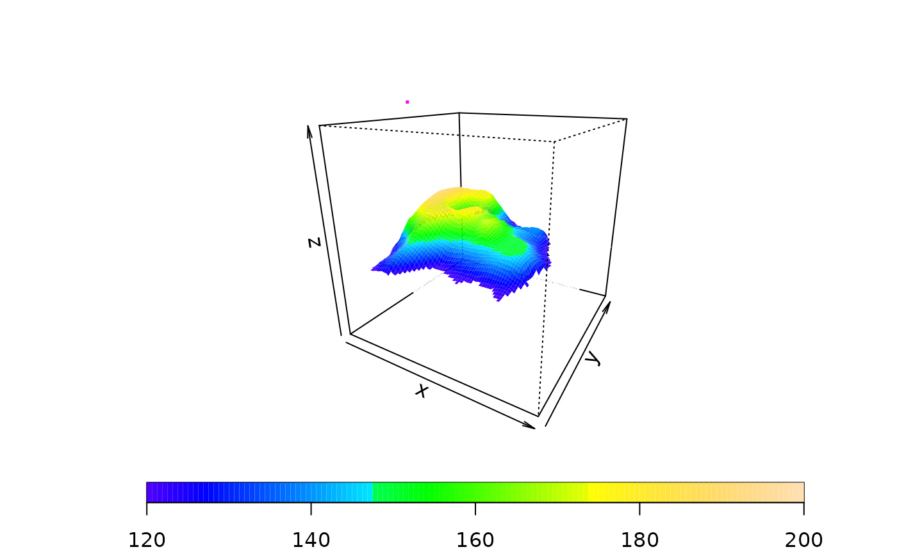
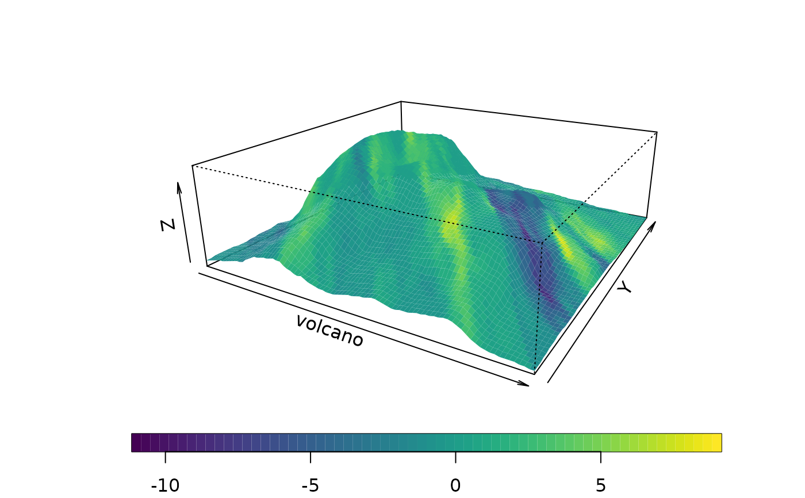

drape.plot.RdFunction to produce the
usual wireframe perspective plot with the facets being filled
with different colors. By default the colors are assigned from a
color bar based on the z values. drape.color can be used to create
a color matrix different from the z matrix used for the wireframe.
drape.plot(x, y, z, z2=NULL, col = tim.colors(64), zlim = range(z, na.rm=TRUE),
zlim2 = NULL, add.legend = TRUE, horizontal = TRUE, theta = 30, phi = 20,
breaks=NA, ...)
drape.color(z, col = tim.colors(64), zlim = NULL,breaks,
transparent.color = "white", midpoint=TRUE, eps=1e-8)grid values for x coordinate (or if x is a list the components x y and z are used.)
grid values for y coordinate
A matrix of z heights
A matrix of z values to use for coloring facets. If NULL then z is used for this purpose
A color table for the z values that will be used for draping
the z limits for z these are used to set up
the scale of the persp plot. This defaults to range(z, na.rm=TRUE) as
in persp
the z limits for z2 these are used to set up
the color scale. This defaults to
If true a color strip is added as a legend.
If true color strip is put at bottom of the plot, if FALSE it is placed vertically on the right side.
x-y rotation angle for perspective.
z-angle for perspective.
Color to use when given an NA in z
If TRUE color scale is formed for midpoints of z obtained by averaging 4 corners.
Numerical divisions for the color scale. If the default (NA)
is N+1 equally spaced points in the range zlim where N is the number of
colors in col. This is the argument has the same effect as used in the
image and image.plot functions.
Amount to inflate the range (1+/- eps) to inlude points on break endpoints.
Other arguments that will be passed to the persp function. The most common is zlim the z limits for the 3-d plot and also the limits to set up the color scale. The default for zlim is the range of z.
drape.plot
If an assignment is made the projection matrix from persp is returned.
This information can be used to add additional 3-d features to the plot.
See the persp help file for an example how to add additional points
and lines using the trans3d function and also the example below.
drape.color If dim( z) = M,N this function returns a list with components:
An (M-1)X(N-1) matrix (midpoint= TRUE) or MXN matrx (midpoint=FALSE) where each element is a text string specifying the color.
The breaks used to assign the numerical values in z to color categories.
The legend strip may obscure part of the plot. If so, add this as another step using image.plot.
When using drape.color just drop the results into the
col argument of persp. Given this function there are no
surprises how the higher level drape.plot works: it calls
drape.color followed by persp and finally the legend
strip is added with image.plot.
The color scales essentially default to the ranges of the z values. However, by specifying zlim and/or zlim2 one has more control of how the perspective plot is scaled and the limits of the color scale used to fill the facets. The color assignments are done by dividing up the zlim2 interval into equally spaced bins and adding a very small inflation to these limits. The mean z2 values, comprising an (M-1)X(N-1) matrix, for each facet are discretized to the bins. The bin numbers then become the indices used for the color scale. If zlim2 is not specified it is the range of the z2 matrix is used to generate the ranges of the color bar. Note that this may be different than the range of the mean facets. If z2 is not passed then z is used in its place and in this case the zlim2 or zlim argument can used to define the color scale.
This kind of plot is also supported through the wireframe function in the
lattice package. The advantage of the fields version is that it uses the
standard R graphics functions -- and is written in R code.
The drape plot is also drawn by the fields surface function with
type="P".
image.plot, quilt.plot, persp, plot.surface, surface, lattice, trans3d
# an obvious choice:
# Dr. R's favorite New Zealand Volcano!
data( volcano)
M<- nrow( volcano)
N<- ncol( volcano)
x<- seq( 0,1,,M)
y<- seq( 0,1,,N)
pm<- drape.plot( x,y,volcano, col=terrain.colors(128))

# use different range for color scale and persp plot
# setting of border omits the mesh lines
drape.plot( x,y,volcano, col=topo.colors(128),zlim=c(0,300),
zlim2=c( 120,200), border=NA)
# note tranparent color for facets outside the zlim2 range
#The projection has been saved in pm
# add a point marking the summit
zsummit <- max( volcano)
ix<- row( volcano)[volcano==zsummit]
iy <- col( volcano)[volcano==zsummit]
uv <- trans3d( x[ix], y[iy],zsummit,pm)
points( uv, col="magenta", pch="+", cex=2)

# overlay volcano wireframe with gradient in x direction.
dz<- (
volcano[1:(M-1), 1:(N-1)] - volcano[2:(M), 1:(N-1)] +
volcano[1:(M-1), 2:(N)] - volcano[2:(M), 2:(N)]
)/2
# convert dz to a color scale:
zlim<- range( c( dz), na.rm=TRUE)
zcol<-drape.color( dz, zlim =zlim, col = viridis(64) )$color.index
# with these colors
persp( volcano, col=zcol, theta=30, phi=20,
border=NA,expand=.3 )
# add legend using image.plot function
image.plot( zlim=zlim, legend.only =TRUE, horizontal =TRUE,
col= viridis(64))
